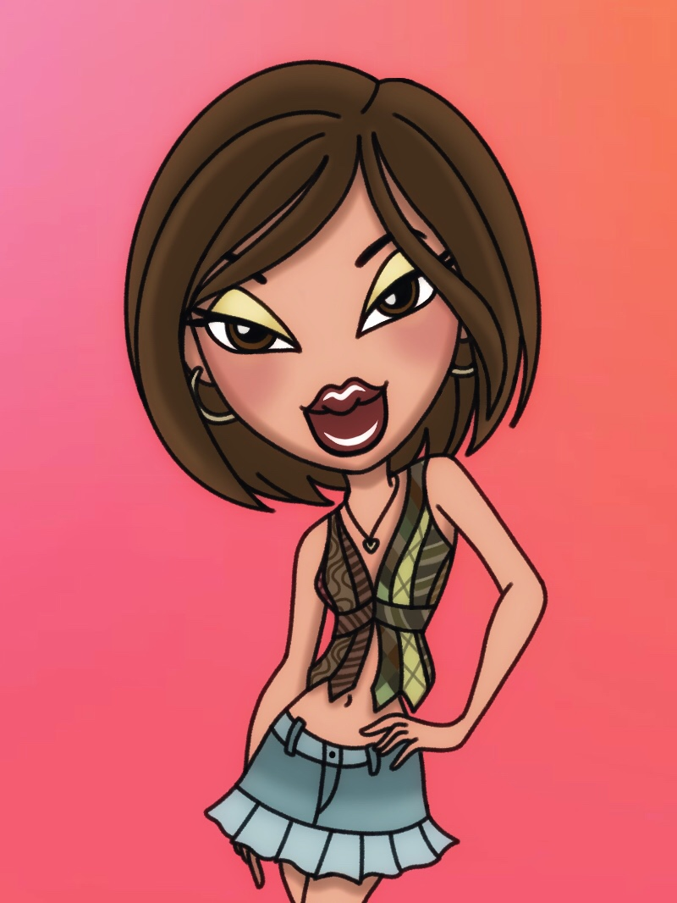
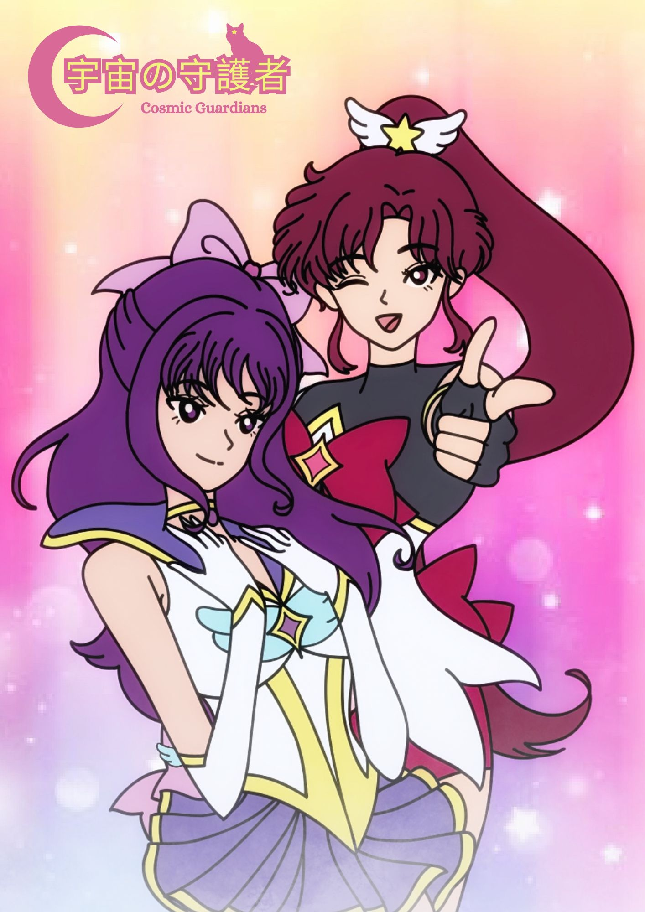
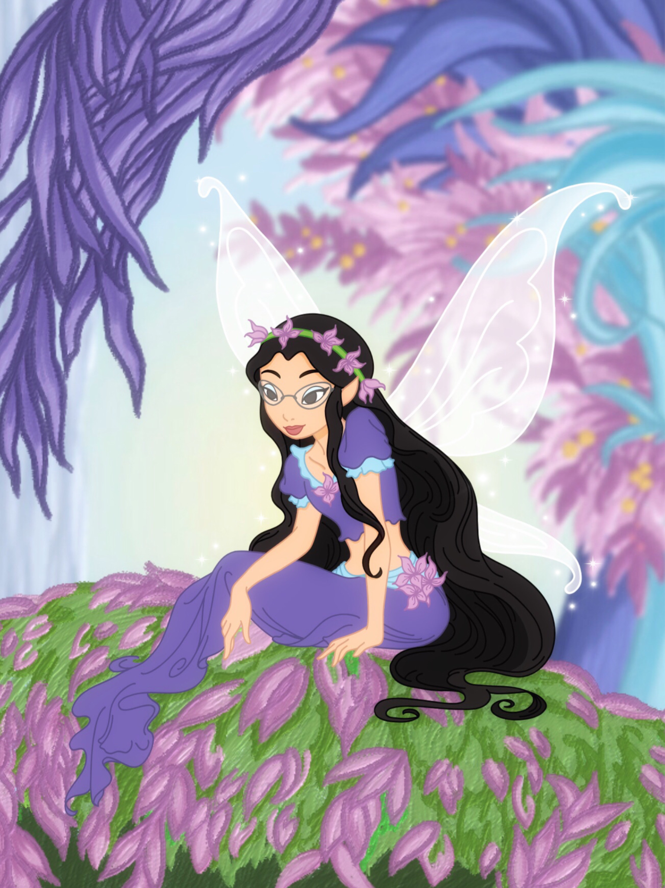
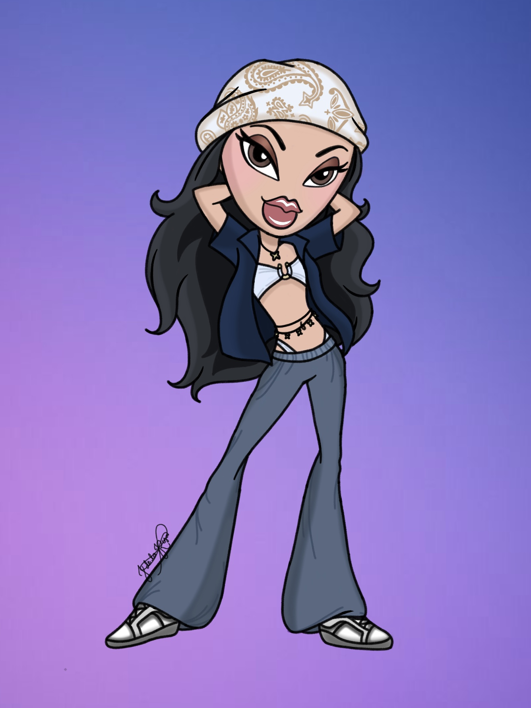
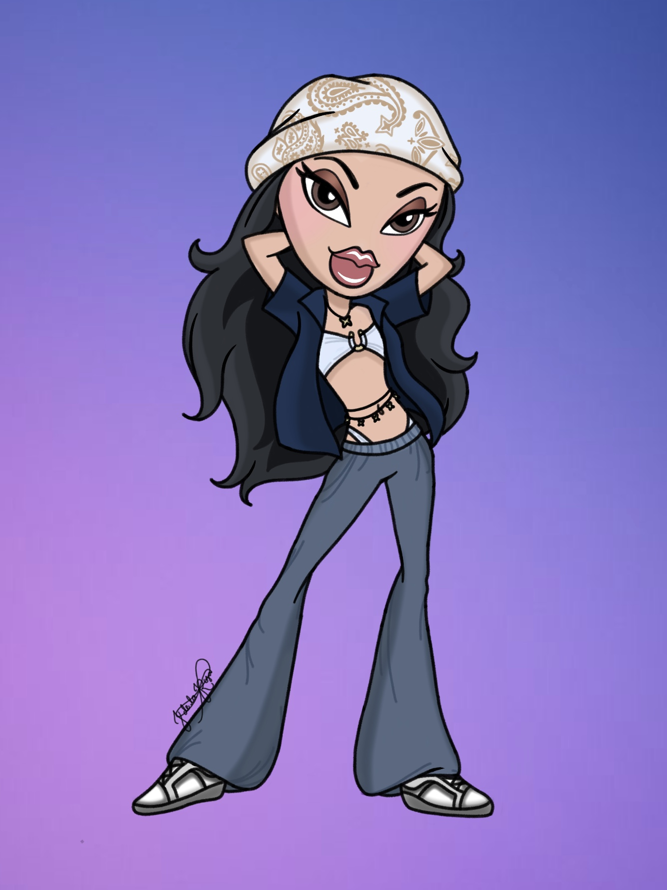

My Projects :
  
 

Since I grew up watching 2000s cartoons as a kid, they have a big influence on how I do my art. As you can see some of my artworks has similarities to well known girly television series / films just like Bratz, Sailor Moon, Tinkerbell, and many more.